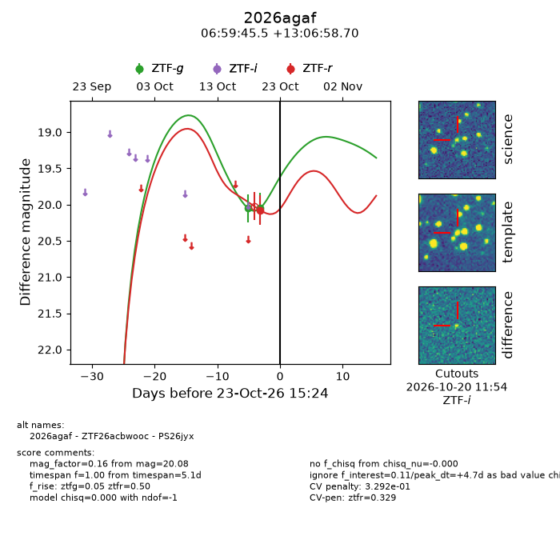
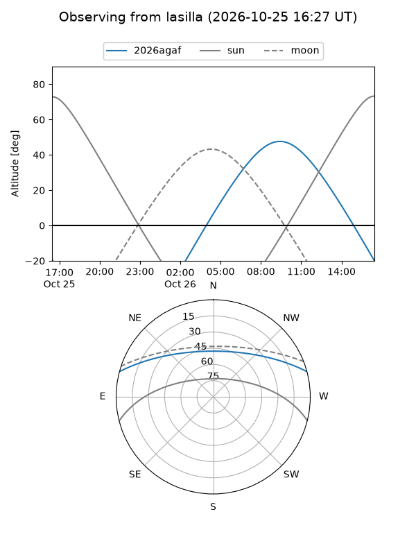
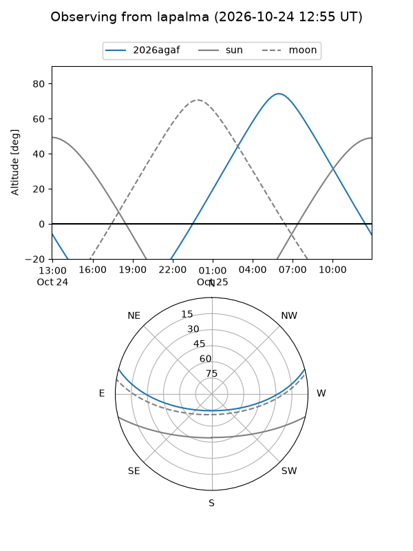
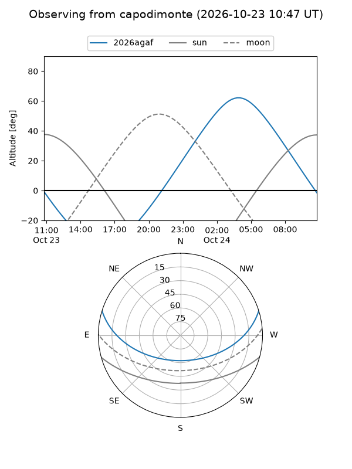
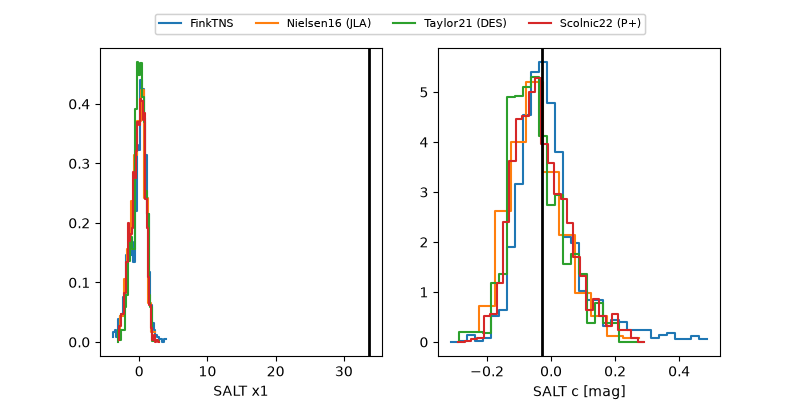

2026agaf
Target 2026agaf at 2026-10-23 15:26
Aliases and brokers:
FINK-ZTF: ztf.fink-portal.org/ZTF26acbwooc
Lasair-ZTF: lasair-ztf.lsst.ac.uk/objects/ZTF26acbwooc
ALeRCE-ZTF: alerce.online/object/ZTF26acbwooc
YSE-PZ: ziggy.ucolick.org/yse/transient_detail/2026agaf
TNS name: wis-tns.org/object/2026agaf
Direct TNS query: direct search
alt names
ZTF26acbwooc (ztf,fink_ztf)
2026agaf (tns,yse)
PS26jyx (panstarrs)
Coordinates:
equatorial (ra, dec) = 104.9395,+13.11631
equatorial (HMS+DMS) = 06:59:45.47,+13:06:58.70
galactic (l, b) = (202.1214,+7.75484)
Flags:
likely cv: !!
CV pen: 0.32919884704746327
peak dt: +4.7
Photometry:
last ztfg=20.05, ztfr=20.08
2 ztfg, 1 ztfr detections
Lightcurve

Visibility



Additional plots
